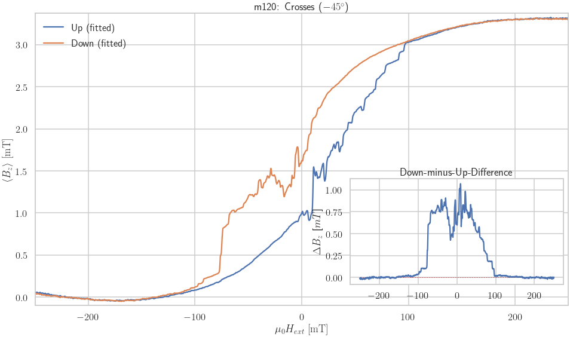
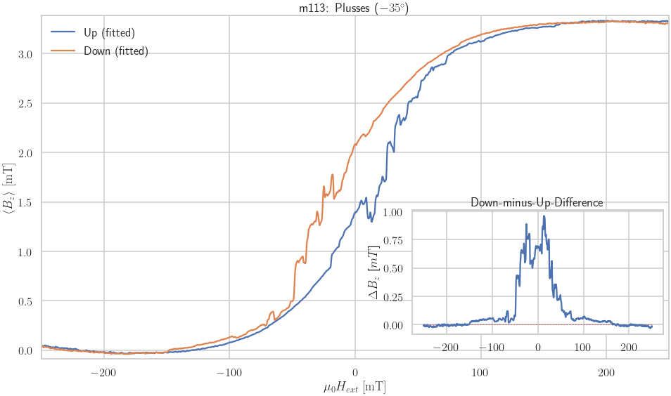
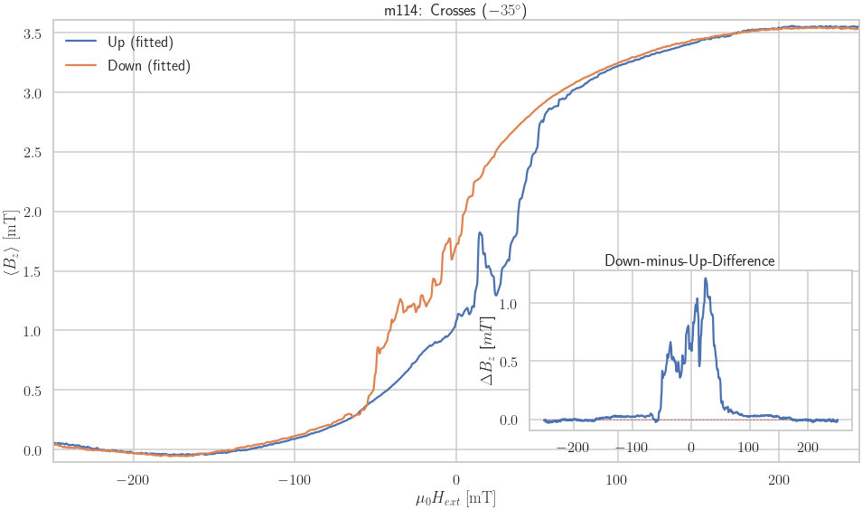
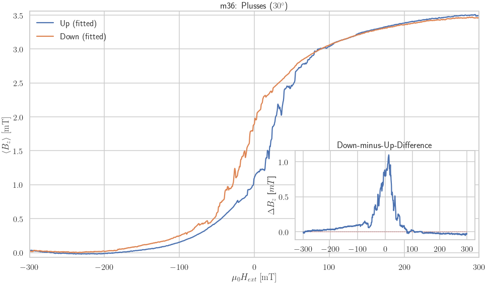

Hloop¶
[ ]:
# Important to find data directory
import os
os.chdir('/notebooks/ana')
[2]:
import numpy as np
import matplotlib.pyplot as plt
import matplotlib
from mpl_toolkits.axes_grid1.inset_locator import inset_axes
import pandas as pd
import seaborn as sns
import scipy
from scipy import constants
import os, sys, time, re # System Modules
from glob import glob # Readout Files in Directories
import ana
%matplotlib inline
[3]:
matplotlib.rcParams['text.latex.preamble'] = r'\usepackage[utf8]{inputenc}\DeclareUnicodeCharacter{2212}{-}'
Calculate carrier concentration¶
\[n = \frac{I}{e \cdot V_H}\]
[4]:
test_meas = ana.Hloop(56)
test_meas.set_factor(1)
test_meas.up.B /= 1e3
test_meas.down.B /= 1e3
x = test_meas.up.B[test_meas.up.B > -.950][test_meas.up.B < .950]
y = test_meas.up.Vx8[test_meas.up.B > -.950][test_meas.up.B < .950]
fit = scipy.stats.linregress(x,y)
x2 = test_meas.down.B[test_meas.down.B > -.950][test_meas.down.B < .950]
y2 = test_meas.down.Vx8[test_meas.down.B > -.950][test_meas.down.B < .950]
fit2 = scipy.stats.linregress(x2,y2)
e = constants.physical_constants['electron volt'][0]
slope = np.mean([fit.slope, fit2.slope])
I = 2.5e-6
n = I/(slope*e)
print("Carrier concentration n = %f 1/m^2= %e 1/m^2 = %e 1/cm^2" % (n,n, n*1e-4))
test_meas.set_factor(1e3)
ax = plt.figure(figsize=(12,9)).gca()
test_meas.plot_hloop(ax, show_fitted=False, show_original=True)
Carrier concentration n = 1369288437038225.250000 1/m^2= 1.369288e+15 1/m^2 = 1.369288e+11 1/cm^2
Load Measurement Info (Angles)¶
[5]:
df_pos2 = pd.read_csv('data/angles_info.csv', index_col=0)
df_parallel2 = pd.read_csv('data/parallel_info.csv', index_col=0)
df_together2 = pd.concat([df_pos2, df_parallel2], axis=1)
df_together2.columns = ['Plusses', 'Crosses', 'Parallel']
df_together2
[5]:
| Plusses | Crosses | Parallel | |
|---|---|---|---|
| -90.0 | 155.0 | 0.0 | NaN |
| -85.0 | 152.0 | 153.0 | NaN |
| -80.0 | 148.0 | 149.0 | NaN |
| -75.0 | 138.0 | 139.0 | NaN |
| -70.0 | 134.0 | 136.0 | NaN |
| -65.0 | 131.0 | 132.0 | NaN |
| -60.0 | 128.0 | 129.0 | NaN |
| -55.0 | 125.0 | 126.0 | NaN |
| -50.0 | 122.0 | 123.0 | NaN |
| -45.0 | 119.0 | 120.0 | NaN |
| -40.0 | 143.0 | 144.0 | NaN |
| -35.0 | 113.0 | 114.0 | NaN |
| -30.0 | 110.0 | 111.0 | NaN |
| -25.0 | 107.0 | 108.0 | NaN |
| -20.0 | 104.0 | 105.0 | NaN |
| -15.0 | 101.0 | 102.0 | NaN |
| -10.0 | 98.0 | 99.0 | NaN |
| -5.0 | 95.0 | 96.0 | NaN |
| 0.0 | 54.0 | 55.0 | 56.0 |
| 5.0 | 51.0 | 52.0 | 53.0 |
| 10.0 | 48.0 | 49.0 | 50.0 |
| 15.0 | 45.0 | 46.0 | 47.0 |
| 20.0 | 42.0 | 43.0 | 44.0 |
| 25.0 | 39.0 | 40.0 | 41.0 |
| 30.0 | 36.0 | 37.0 | 38.0 |
| 35.0 | 32.0 | 34.0 | 35.0 |
| 40.0 | 29.0 | 30.0 | 31.0 |
| 42.5 | NaN | NaN | 28.0 |
| 45.0 | 23.0 | 22.0 | 24.0 |
| 50.0 | 79.0 | 80.0 | NaN |
| 55.0 | 76.0 | 77.0 | NaN |
| 60.0 | 73.0 | 74.0 | NaN |
| 65.0 | 70.0 | 71.0 | 72.0 |
| 70.0 | 67.0 | 68.0 | 69.0 |
| 75.0 | 64.0 | 65.0 | 66.0 |
| 80.0 | 61.0 | 62.0 | 63.0 |
| 85.0 | 58.0 | 59.0 | 60.0 |
| 90.0 | 57.0 | 0.0 | 57.0 |
| 95.0 | 82.0 | 83.0 | NaN |
| 100.0 | 85.0 | 86.0 | NaN |
| 105.0 | 88.0 | 89.0 | NaN |
| 110.0 | 91.0 | 93.0 | NaN |
Plot Strayfield¶
[6]:
def set_size(width_pt, fraction=1, subplots=(1, 1)):
"""Set figure dimensions to sit nicely in our document.
Source: https://jwalton.info/Matplotlib-latex-PGF/
Parameters
----------
width_pt: float
Document width in points
fraction: float, optional
Fraction of the width which you wish the figure to occupy
subplots: array-like, optional
The number of rows and columns of subplots.
Returns
-------
fig_dim: tuple
Dimensions of figure in inches
"""
# Width of figure (in pts)
fig_width_pt = width_pt * fraction
# Convert from pt to inches
inches_per_pt = 1 / 72.27
# Golden ratio to set aesthetic figure height
golden_ratio = (5**.5 - 1) / 2
# Figure width in inches
fig_width_in = fig_width_pt * inches_per_pt
# Figure height in inches
fig_height_in = fig_width_in * golden_ratio * (subplots[0] / subplots[1])
return (fig_width_in, fig_height_in)
[7]:
m = ana.Hloop(57)
m.style.set_style(default=True, size="paper")
fig, ax = plt.subplots(figsize=set_size(426))
m.plot_strayfield(ax, 'm57: Strayfield ($90^\\circ$)')
plt.savefig('90deg-stray.pgf', format='pgf')
Measurement Plan (90deg, Noise)¶
[8]:
# Set Plot Style
sns.set(context="notebook", style="ticks", palette="deep")
plt.style.use(['science', 'notebook'])
# Save figures?
save_figures = True
# Global information
figsize = (16,10) # set_size(426)
x1, x2 = -750, 750
y1, y2 = -1.5, .5
main_color = '#CCCCFF'
#m.style.set_style(size="paper")
# Inset position and limits
## Position = x_pos, y_pos, width, height
## unit of positions are in % of frame
## x_pos, ypos points to lower left corner of inset
i1pos = .69, .3, .3, .3
i1x1, i1x2 = -100, 100
i2pos = .65, .8, .34, .2
i2x1, i2x2 = 530, 620
i2y1, i2y2 = -.175, 0.05
i3pos = .055, .65, .25, .3
i3x1, i3x2 = -650, -250
i3y1, i3y2 = -.05, .125
i4pos = .06, .03, .3, .25
i4x1, i4x2 = -100, 0
i4y1, i4y2 = -1.35, -.75
i5pos = .07, .36, .4, .28
i5x1, i5x2 = -300, 50
i5y1, i5y2 = -.7, .45
# Highlighting limits
h0range, h0color, h0alpha = 25, 'blue', .1
h1x1, h1x2, h1color, h1alpha = -611, -443, 'orange', .1
h2x1, h2x2, h2color, h2alpha = -291, -443, 'red', .1
h3x1, h3x2, h3color, h3alpha = -291.13, 36.56, 'green', .1
# Create Plot
fig, ax = plt.subplots(figsize=figsize)
# Plot hysetersis
m.plot_strayfield(ax, 'm57: Strayfield ($90^\\circ$)')
# Draw Inset 1
inset = inset_axes(ax, width='100%', height='90%',
bbox_to_anchor=i1pos,
bbox_transform=ax.transAxes)
# Highlight 0 / 3
inset.fill([-h0range, -h0range, h0range, h0range], [y2, y1, y1, y2], h0color, alpha=h0alpha)
inset.fill([h3x1, h3x1, h3x2, h3x2], [y2, y1, y1, y2], h3color, alpha=h3alpha)
# Highlight tertiary range
i1tert = h0range/3 # Tertiary range
inset.plot([i1tert, i1tert], [y1, y2], 'b--', alpha=.5)
inset.plot([-i1tert, -i1tert], [y1, y2], 'b--', alpha=.5)
m.plot_strayfield(inset, '$B \\in (-100, 100)$ mT', nolegend=True)
inset.set_xlim(i1x1, i1x2)
inset.set_ylim(y1, y2)
# Draw Inset 2
inset2 = inset_axes(ax, width='100%', height='90%',
bbox_to_anchor=i2pos,
bbox_transform=ax.transAxes)
m.plot_strayfield(inset2, '$B \\in (500, 600)$ mT', nolegend=True)
inset2.set_xlim(i2x1, i2x2)
inset2.set_ylim(i2y1, i2y2)
# Draw Inset 3
inset3 = inset_axes(ax, width='100%', height='90%',
bbox_to_anchor=i3pos,
bbox_transform=ax.transAxes)
m.plot_strayfield(inset3, '$B \\in (%s, %s)$ mT' % (i3x1, i3x2), nolegend=True)
inset3.set_xlim(i3x1, i3x2)
inset3.set_ylim(i3y1, i3y2)
# Highlight 1 / 2
inset3.fill([h1x1, h1x1, h1x2, h1x2], [i3y1, i3y2, i3y2, i3y1], h1color, alpha=h1alpha)
inset3.fill([h2x1, h2x1, h2x2, h2x2], [i3y1, i3y2, i3y2, i3y1], h2color, alpha=h2alpha)
# Draw Inset 4
inset4 = inset_axes(ax, width='100%', height='90%',
bbox_to_anchor=i4pos,
bbox_transform=ax.transAxes)
m.plot_strayfield(inset4, '$B \\in (%s, %s)$ mT' % (i4x1, i4x2), nolegend=True)
inset4.set_xlim(i4x1, i4x2)
inset4.set_ylim(i4y1, i4y2)
# Draw Inset 5
inset5 = inset_axes(ax, width='100%', height='90%',
bbox_to_anchor=i5pos,
bbox_transform=ax.transAxes)
m.plot_strayfield(inset5, '$B \\in (%s, %s)$ mT' % (i5x1, i5x2), nolegend=True)
inset5.set_xlim(i5x1, i5x2)
inset5.set_ylim(i5y1, i5y2)
inset5.fill([h3x1, h3x1, h3x2, h3x2], [i5y2, i5y1, i5y1, i5y2], h3color, alpha=h3alpha)
# Main Plot limits
ax.set_xlim(x1, x2)
ax.set_ylim(y1, y2)
# Highlight in main plot
ax.fill([-h0range, -h0range, h0range, h0range], [y1, y2, y2, y1], h0color, alpha=h0alpha)
ax.fill([h1x1, h1x1, h1x2, h1x2], [y1, y2, y2, y1], h1color, alpha=h1alpha)
ax.fill([h2x1, h2x1, h2x2, h2x2], [y1, y2, y2, y1], h2color, alpha=h2alpha)
ax.fill([h3x1, h3x1, h3x2, h3x2], [y1, y2, y2, y1], h3color, alpha=h3alpha)
# Remove x and y labels
for i, inset_ax in enumerate([inset3, inset2, inset5, inset, inset4]):
inset_ax.set_xlabel('')
inset_ax.set_ylabel('')
inset_ax.set_title('')
ann_x, ann_xx = inset_ax.get_xlim()
ann_x += (ann_xx - ann_x)*.05
ann_yy, ann_y = inset_ax.get_ylim()
ann_y -= (ann_y - ann_yy)*.20
inset_ax.text(x=ann_x, y=ann_y, s=chr(i+97) + ')',
fontdict=dict(fontweight='bold', fontsize=10),
bbox=dict(boxstyle="round,pad=0.1", fc=main_color, ec="b", lw=1))
# Save as image (if needed)
if save_figures:
m.style.save_plot('m57_zoomed', 'png')
<Figure size 576x432 with 0 Axes>
Plot All measurements¶
Compact (4 in One)¶
[9]:
def get_measurement(meas, all_angles):
for i, nr in enumerate(map(int, all_angles)):
meas[nr] = ana.Hloop(nr)
return meas
all_angles = df_together2.query('Crosses > 0')[['Plusses', 'Crosses']].dropna().to_numpy().ravel()
all_angles
meas = {}
meas = get_measurement(meas, all_angles)
[11]:
def plot_four_measurement(meas, all_angles, axes):
global style
for i, nr in enumerate(map(int, all_angles)):
ax = axes[i//2][i%2]
# meas[nr].get_info_from_name()
meas[nr].style.set_style(default=True)
meas[nr].plot_strayfield(ax)
inset = inset_axes(ax, width='100%', height='90%',
bbox_to_anchor=(.6, .08, .4, .4),
bbox_transform=ax.transAxes)
max_b = meas[nr].up.B.max()
inset.plot([-max_b, max_b], [0, 0], 'r--', linewidth=.75)
B_ext, B_stray = meas[nr].get_downminusup_strayfield()
inset.plot(B_ext, B_stray)
inset.set_title("Down-minus-Up-Difference")
#plt.savefig('compare_all_strayfield.png')
#plt.savefig('compare_all_strayfield.pdf')
for i in range(len(all_angles)//4):
fig, axes = plt.subplots(2,2, figsize=(16,9))
plot_four_measurement(meas, all_angles[4*i:4*i+4], axes)
---------------------------------------------------------------------------
AttributeError Traceback (most recent call last)
<ipython-input-11-384a03c3c052> in <module>
23 for i in range(len(all_angles)//4):
24 fig, axes = plt.subplots(2,2, figsize=(16,9))
---> 25 plot_four_measurement(meas, all_angles[4*i:4*i+4], axes)
<ipython-input-11-384a03c3c052> in plot_four_measurement(meas, all_angles, axes)
5 # meas[nr].get_info_from_name()
6 meas[nr].style.set_style(default=True)
----> 7 meas[nr].plot_strayfield(ax)
8
9 inset = inset_axes(ax, width='100%', height='90%',
/notebooks/ana/ana/hloop.py in plot_strayfield(self, ax, figtitle, **kwargs)
436 None.:
437 """
--> 438 self.set_factor(kwargs.get('factor', 1e3))
439 self.calculate_strayfield()
440
/notebooks/ana/ana/hloop.py in set_factor(self, factor)
205 """
206 self.up.Vx8 /= self.factor
--> 207 self.down.Vx8 /= self.factor
208 if (self.parallel):
209 self.up.Vx9 /= self.factor
AttributeError: 'Hloop' object has no attribute 'down'
Plot single measurements¶
[12]:
#meas = {}
for nr in all_angles:
fig, ax = plt.subplots(1, 1, figsize=(16,9))
meas[nr].style.set_style(default=True)
try:
meas[nr].plot_strayfield(ax)
except:
continue
inset = inset_axes(ax, width='100%', height='90%',
bbox_to_anchor=(.6, .05, .4, .4),
bbox_transform=ax.transAxes)
max_b = meas[nr].up.B.max()
inset.plot([-max_b, max_b], [0, 0], 'r--', linewidth=.75)
B_ext, B_stray = meas[nr].get_downminusup_strayfield()
inset.plot(B_ext, B_stray)
inset.set_ylabel("$\Delta B_z$ [$mT$]")
inset.set_title("Down-minus-Up-Difference")
#plt.savefig('plot/m%s_%s_%sdeg.png' % (nr,meas[nr].data['Structure'],meas[nr].data['Angle']))
#plt.savefig('plot/m%s_%s_%sdeg.pdf' % (nr,meas[nr].data['Structure'],meas[nr].data['Angle']))
<ipython-input-12-bfb78f2f7c96>:3: RuntimeWarning: More than 20 figures have been opened. Figures created through the pyplot interface (`matplotlib.pyplot.figure`) are retained until explicitly closed and may consume too much memory. (To control this warning, see the rcParam `figure.max_open_warning`).
fig, ax = plt.subplots(1, 1, figsize=(16,9))






Show Measurement Infos¶
[13]:
df = pd.DataFrame({}, index=[], columns=['Type',
'Date',
'Structure',
'Angle',
'I1',
'I2',
'Vin',
'R11',
'R12',
'R13',
'R21',
'C11',
'C21',
'T',
'SR',
'Vrem1',
'Vrem2',
'Bcoer1',
'Bcoer2'])
for nr, m in meas.items():
data = m.info
try:
m.fit()
except:
pass
try:
rem1, rem2 = m.get_remanence()
data['Vrem1'], data['Vrem2'] = rem1.Vx8, rem2.Vx8
except:
pass
try:
mean, coer1, coer2 = m.get_coercive_field()
data['V0'], data['Bcoer1'], data['Bcoer2'] = mean, coer1.B, coer2.B
except:
pass
newdf = pd.DataFrame(data, index=[nr])
if(df.empty):
df = newdf
else:
df = pd.concat([df, newdf])
[14]:
df
[14]:
| Type | Date | Structure | Angle | I1 | I2 | Vin | R11 | R12 | R13 | ... | deg | type1 | dir | type2 | date | time | GBIP8 | B | gate | R1 | |
|---|---|---|---|---|---|---|---|---|---|---|---|---|---|---|---|---|---|---|---|---|---|
| 152 | Hloop (Gradio) | 07.04.2019 01:33 | Plusses | -85 | 1-13 | 8-6 | 2.5 | 1M | 7.5k | 0 | ... | NaN | NaN | NaN | NaN | NaN | NaN | NaN | NaN | NaN | NaN |
| 153 | Hloop (Gradio) | 07.04.2019 10:00 | Crosses | -85 | 2-12 | 8-6 | 2.5 | 1M | 4k | 0 | ... | NaN | NaN | NaN | NaN | NaN | NaN | NaN | NaN | NaN | NaN |
| 148 | Hloop (Gradio) | 06.04.2019 12:00 | Plusses | -80 | 1-13 | 8-6 | 2.5 | 1M | 8.25k | 0 | ... | NaN | NaN | NaN | NaN | NaN | NaN | NaN | NaN | NaN | NaN |
| 149 | Hloop (Gradio) | 06.04.2019 17:000 | Crosses | -80 | 2-12 | 8-6 | 2.5 | 1M | 3.75k | 0 | ... | NaN | NaN | NaN | NaN | NaN | NaN | NaN | NaN | NaN | NaN |
| 138 | Hloop (Gradio) | 02.04.2019 19:00 | Plusses | -75 | 1-13 | 8-6 | 2.5 | 1M | 2k | 0 | ... | NaN | NaN | NaN | NaN | NaN | NaN | NaN | NaN | NaN | NaN |
| ... | ... | ... | ... | ... | ... | ... | ... | ... | ... | ... | ... | ... | ... | ... | ... | ... | ... | ... | ... | ... | ... |
| 86 | Hloop (Gradio) | 24.03.2019 14:00 | Crosses | 100 | 2-12 | 8-6 | 2.5 | 1M | 2.25k | 0 | ... | NaN | NaN | NaN | NaN | NaN | NaN | NaN | NaN | NaN | NaN |
| 88 | None (Gradio) | NaN | Plusses | 105 | 1-13 | 8-6 | 2.5V | 1MO | NaN | 0 | ... | 105 | Hloop | up | Gradio | 20190324 | 2000 | 14-7 | 1T | 0V | 2.6kO |
| 89 | None (Gradio) | NaN | Crosses | 105 | 1-13 | 8-6 | 2.5V | 1MO | NaN | 0 | ... | 105 | Hloop | down | Gradio | 20190325 | 0800 | 14-7 | 0.75T | 0V | 1.4kO |
| 91 | Hloop (Gradio) | 25.03.2019 14:00 | Plusses | 110 | 1-13 | 8-6 | 2.5 | 1M | 5.15k | 0 | ... | NaN | NaN | NaN | NaN | NaN | NaN | NaN | NaN | NaN | NaN |
| 93 | Hloop (Gradio) | 25.03.2019 22:00 | Crosses | 110 | 1-13 | 8-6 | 2.5 | 1M | 2.25k | 0 | ... | NaN | NaN | NaN | NaN | NaN | NaN | NaN | NaN | NaN | NaN |
78 rows × 33 columns